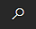

Suchen von Seiten und Informationen mit Wie möchten Sie weiter verfahren
In diesem Artikel wird beschrieben, wie Ihnen die produktinterne Suche Was möchten Sie tun? helfen kann:
- Gehen Sie schnell zu Aktionen, Seiten oder Berichten.
- Suchen Sie nach bestimmten Daten, entweder auf einer Listenseite oder im gesamten Business Central.
- Finden Sie Business Central Dokumentationen zu einem Thema, das Sie interessiert.
Wenn Sie Hilfe bei der Suche nach etwas benötigen, verwenden Sie die  Klicken Sie auf das Suchsymbol, um danach zu suchen. Sie können die Suche auch über ALT+Q starten.
Wenn Sie auf der Seite Wie möchten Sie weiter verfahren mit der Eingabe von Zeichen beginnen, zeigt Business Central sofort Übereinstimmungen an. Ergebnisse in der Liste ändern sich, wenn Sie weitere Zeichen eingeben. Wenn Sie bemerken, dass bei der Eingabe des Wortes Produkt auch Ergebnisse wie Artikel angezeigt werden, liegt das daran, dass die Suche Synonyme und alternative Suchbegriffe verwendet, um die Suche nach Aktionen, Seiten und Berichten zu vereinfachen.
Die Spalte rechts gibt die allgemeine Kategorie des Ergebnisses an. Beispielsweise, ob es eine Listenseite oder eine Verwaltungsaufgabe ist.
Am unteren Rand der Seite Wie möchten Sie weiter verfahren ist die Aktion Seiten und Berichte erkunden. Hiermit wird eine Funktionsübersicht geöffnet, in der alle verfügbaren Funktionen für Ihre Rolle oder für alle Rollen angezeigt werden. Erfahren Sie mehr unter Suche nach Seiten mit dem Rollen-Explorer.
Tipp
Wenn Sie Ihre Tastatur vorziehen, nutzen Sie die TAB-TASTE sowie die Pfeiltasten, um ein Element in den Ergebnissen auszuwählen. Wenn Sie die Eingabetaste auswählen, ohne auch ein Ergebnis zu wählen, öffnet Business Central das Ergebnis, das zuerst aufgeführt wird.
Auf der Seite Wie möchten Sie weiter verfahren werden Ergebnisse basierend auf den von Ihnen eingegebenen Daten und der Seite, an der Sie arbeiten, kategorisiert. In den folgenden Abschnitten werden die Kategorien beschrieben.
Suchen nach einer Aktion auf der aktuellen Seite
Im Abschnitt Auf aktueller Seite können Sie Aktionen auf der geöffneten Seite suchen. Wenn beispielsweise die Verkaufsangebot Seite geöffnet ist und Sie "Debitor" eingeben, umfasst der Abschnitt eine Aktion, mit der die Debitorenkarte für den Debitor geöffnet wird, der im Verkaufsangebot ausgewählt ist.
Hinweis
Die Liste enthält nur Aktionen, die in der Navigationsleiste oben auf der Seite verfügbar sind. Aktionen in Inforegistern werden nicht berücksichtigt.
Suchen nach einer Seite oder Aufgabe
Die Ergebnisse im Abschnitt Zu Seiten und Aufgaben wechseln bieten Zugriff auf andere Seiten und lässt Sie Aufgaben ausführen oder Informationen suchen. Wenn Sie diese Seiten häufig verwenden, können Sie über das Lesezeichensymbol einen Link zu einer beliebigen Seite in Ihrem Rollencenter hinzufügen. Weitere Informationen finden Sie unter Fügen Sie Ihrem Rollencenter eine Seitenaktion hinzu.
Die aufgeführten Seiten und Aufgaben hängen von der Benutzerumgebung ab, die Sie für Ihr Unternehmen ausgewählt haben. Die Standard Umgebung gibt Zugang zu weniger Seiten und Aufgaben, als die Umgebung Premium. Wenn Sie sich zum ersten Mal anmelden, nutzen Sie die Umgebung Standard. Weitere Informationen zu Benutzererfahrungen finden Sie unter Anpassen Ihrer Business Central Erfahrung.
Suchen nach einem Bericht oder archivierten Informationen
Der Abschnitt Zu „Berichte und Analysen“ wechseln bietet Zugriff auf Tools zur Berichtserstattung. Beispielsweise können Sie den Bericht Bilanz aus der Liste öffnen oder auf archivierte Belege und andere Informationen zugreifen.
Suchen Sie einen Datensatz oder durchsuchen Sie die Dokumentation
Der Abschnitt Suchen nach <keyword> Business Central bietet mehrere Suchmöglichkeiten:
- Verwenden Sie die Aktion Unternehmensdaten durchsuchen, um alle Seiten in Business Central zu durchsuchen.
Verwenden Sie die Aktion Hilfe durchsuchen, um einen Artikel in der Business Central-Dokumentation zu finden, der Ihr Schlüsselwort enthält.
Hinweis
Ihre Suchergebnisse enthalten keine Dokumentation für Erweiterungen von Drittanbietern.
„Wie möchten Sie weiter verfahren“ verwenden
verwenden Klicken Sie auf das Suchsymbol, um Daten in Business Central zu suchen. Sie können beispielsweise einen Debitor finden, indem Sie dessen Namen oder Adresse eingeben, oder sogar einen bestimmten Datensatz, beispielsweise einen Debitorenauftrag, finden. Sie können es auch verwenden, um Informationen in unserer Dokumentation zu finden.
Geben Sie einfach mindestens drei Zeichen eines Schlüsselworts ein und wählen Sie dann entweder Unternehmensdaten durchsuchen oder Hilfe durchsuchen.
- Wenn Sie nach Daten suchen, werden die Ergebnisse auf der Seite In Unternehmensdaten suchen angezeigt, wo sie nach Typ sortiert sind.
- Wenn Sie in unserer Hilfe suchen, bietet der Bereich Hilfe Links zu Artikeln, die Ihre Schlüsselwörter enthalten. Sie erhalten außerdem einen Ausschnitt aus dem Artikel, der Ihnen bei der Entscheidung helfen kann, ob es das ist, woran Sie interessiert sind.
Hinweis
Bei Daten kann es einige Zeit dauern, in Business Central alles zu durchsuchen. Um die Ergebnisse zu beschleunigen, verwenden Sie die Aktion Zu durchsuchende Tabellen anzeigen, um die Tabellen und Felder auszuwählen, die Sie in Ihre Suche einbeziehen möchten. Die Tabellen und Felder, aus denen Sie auswählen können, variieren je nach Rollencenter. Standardmäßig werden alle Tabellen und Felder ausgewählt, was die Suche verlangsamen kann. Wir empfehlen, so viele Tabellen und Felder wie möglich auszuschließen.
Nachdem Sie Ihre Schlüsselwörter eingegeben haben, startet Business Central Ihre Suche im Hintergrund und geht jede Tabelle einzeln durch. Die Suchergebnisse beginnen zu erscheinen, nachdem jede Tabelle beendet wurde. Wenn Sie mehr als ein Schlüsselwort eingeben, enthalten die Ergebnisse nur Datensätze, die alle Wörter in einem der ausgewählten Felder enthalten.
Die Ergebnisseite zeigt die drei zuletzt aktualisierten Datensätze. Wenn es mehr als drei sind, können Sie Alle Ergebnisse anzeigen auswählen, um sie anzuzeigen.
Jedes Mal, wenn Sie ein Suchergebnis auswählen, erhöhen Sie die Popularität der Tabelle, und sie wird höher in den Ergebnissen angezeigt. Außerdem wird der Datensatz schneller gefunden, wenn Sie in Zukunft danach suchen.
Hinweis
Kopfzeilen auf Verkaufs-, Einkaufs- und Servicedokumenten stellen tatsächlich unterschiedliche Dokumenttypen dar, wie z. B. Angebote, Rechnungen und Bestellungen. Kopfzeilen werden wie Tabellen behandelt. Wenn Ihr Schlüsselwort in einer Zeile in einem dieser Dokumente gefunden wurde, wird beim Auswählen des Suchergebnisses die Seite für das Dokument angezeigt und nicht nur die Zeile.
Holen Sie sich mehr Funktionalität von Apps
Unsere Partner Community entwickelt laufend Apps, die Funktionen zu Business Central hinzufügen. Der Abschnitt Aus Microsoft AppSource herunterladen führt Apps für Business Central auf, die auf Microsoft AppSource verfügbar und sind und mit dem Suchwort zusammenhängen, das Sie eingegeben haben.
Verwenden Sie die Suche auf Listenseiten
Es hat nichts mit „Wie möchten Sie weiter verfahren“ zu tun, aber es gibt eine andere Möglichkeit, nach bestimmten Daten zu suchen. Wenn Sie eine Listenseite verwenden, können Sie das Feld  Suche in der linken Ecke der Kopfzeile der Listenseite verwenden, um nach Daten auf der Seite zu suchen. Die Suche trifft nur auf die Liste zu, die Sie anzeigen. Weitere Informationen zum Arbeiten mit Daten auf Listenseiten finden Sie unter Listen sortieren, suchen und filtern.
Suche in der linken Ecke der Kopfzeile der Listenseite verwenden, um nach Daten auf der Seite zu suchen. Die Suche trifft nur auf die Liste zu, die Sie anzeigen. Weitere Informationen zum Arbeiten mit Daten auf Listenseiten finden Sie unter Listen sortieren, suchen und filtern.
Tipp
Sie können nach gebuchten Belegzeilen suchen, z. B. Rechnungszeilen, Gutschriftszeilen, Lieferzeilen und Empfangszeilen. Suchen Sie nach der Art der Dokumentzeilen, die Sie finden möchten, und markieren Sie dann die Links zu den Dokumenten auf Ihrer Homepage mit einem Lesezeichen, um einfachen Zugriff auf das Original oder eine gefilterte Ansicht zu erhalten. Erfahren Sie mehr unter Fügen Sie Ihrem Rollencenter eine Seitenaktion hinzu.
Fragen?
Wir haben die Suche einer Reihe von Projektbeteiligten präsentiert, deren gemeinsame Fragen notiert und aus unseren Notizen eine Liste der häufig gestellten Fragen erstellt. Bei Interesse finden Sie sie unter „Wie möchten Sie weiter verfahren“-FAQ.
Siehe auch
Arbeiten mit Business Central
Fügen Sie Ihrem Rollencenter eine Seitenaktion hinzu
Listenansichten speichern und personalisieren
Kostenlose E-Learning-Module für Business Central finden Sie hier